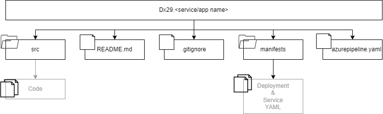
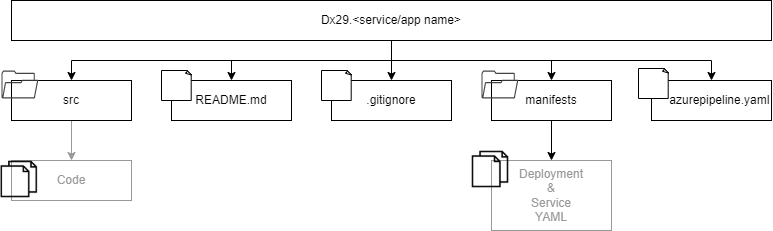

{kind=link}
{kind=link}
Dx29 v2¶
What is Dx29?
Dx29 is a non-profit project to help patients and physicians understand the patient disease. It is a completely free software for analysis and management of your symptoms, creation and sharing of your medical history and help to reach a diagnosis.
If you already have a diagnosis, you will be able to generate your medical history and also keep up to date with clinical trials and patient groups of your disease.
The data in Dx29 can only be shared by its owner. Foundation 29 will never share it with anyone. In the future, we will include functionality so that patients can store their own data in their own private data space.
What is Foundation 29?
We are a non-profit foundation. We work for a medicine in which empowered patients take control of their health through their data and work with doctors and institutions to improve their well-being and that of others.
We create technologies that allow a radical change in your capabilities as users and in the entire medical ecosystem.
The activism of patients, their families and associations are at our core. We put special focus on rare diseases. They are in our origin and in our name: February 29, world day of rare diseases.
Visit our website.
This document
This document presents a technical description of the Dx29 software architecture.
Dx29 v2
- 1. Architecture
- 1.1. Level 1: System Context
- 1.2. Level 2: Containers
- 1.3. Level 3: Component
- 1.4. Level 4: Code
- 2. Data models
- 3. Environments
- 3.1. Dev Environment
- 3.2. Test environment
- 3.3. Prod environment
- 3.4. Scripts for create and deploy environments
- 4. Build & Deploy
- 4.1. Build
- 4.2. Deploy
- 4.3. Automation
- 4.4. Running and working locally
- 4.5. Current Status of the environments
- 5. Code Guidelines
- 6. Github repositories